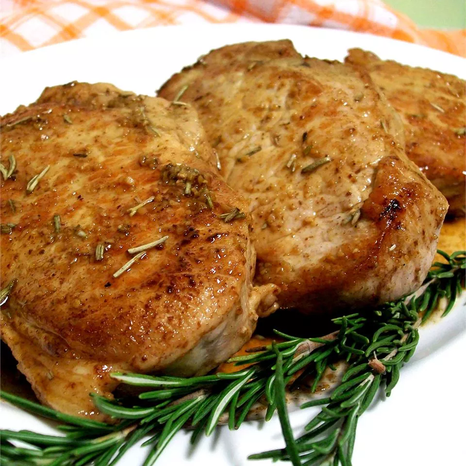
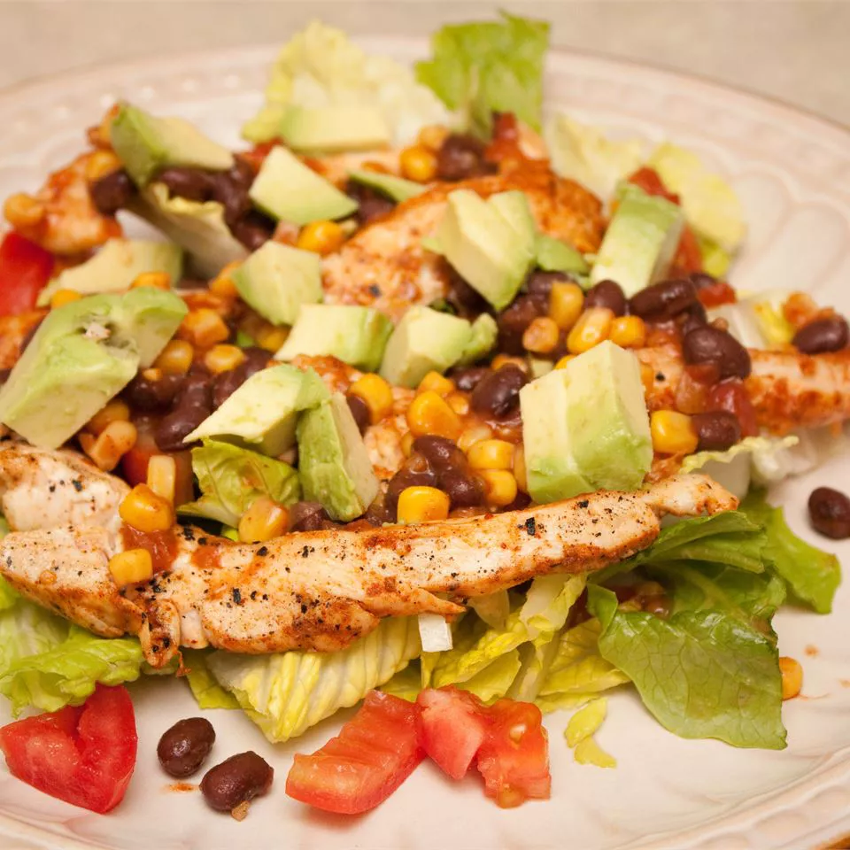

"Super delicious and so easy to make — each person gets just the ingredients they want on their salad," Jasmine Couillard says.

"This was simple and had great flavor. I made it with rice and drizzled the extra sauce over it. Turned out great," Theresa says.
